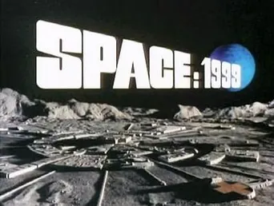

The genetics
Heredity and racial purity drive this episode. The ship's elite preserve a gene bank of unmutated Darian genetic material, intending to use it to create a new race once they reach their destination, and they treat the radiation-damaged descendants of the crew as raw material: the deformed are recycled as food and the healthy are harvested for organs. The Survivors' ritual killing of anyone with a birth defect is a crude form of eugenic selection taught to them by the rulers. According to the episode's production history, writer Johnny Byrne combined the 1972 Andes plane-crash cannibalism case with a spin on racial purity, the "Darians" standing for "Aryans". The leaders are not scientists but an aristocracy using science to prolong their own lives, and the destruction of the gene bank symbolises the end of their scheme. The idea that radiation produces heritable mutations is grounded in real science; the rest is allegory.
The story
Moonbase Alpha picks up a distress call from Daria, a colossal ship drifting past the Moon. Commander Koenig leads a rescue team aboard and the group splits up. Dr Russell is captured by the Survivors, a tribe of savages who send anyone with a deformity, even security officer Lowry with a missing finger joint, into a vaporisation chamber, and offer healthy people as sacrifices to their god, Neman. Koenig and Professor Bergman learn the ship's history from the elegant Kara: nine hundred years ago a reactor accident irradiated most of the 50,000 crew, and only fourteen people in the command area escaped mutation. Neman, the ship's captain, reveals that the sacrifices are harvested for organs to keep the fourteen alive while they guard a gene bank meant to recreate a pure Darian race. The Alphans fight back, a Survivor smashes Neman into the gene bank, and Koenig persuades both groups to cooperate.